유기농업기사 (2018-04-28 기출문제)
1과목: 재배원론
1. 다음 중 가장 먼저 발견된 식물 호르몬은?
- 옥신
- 지베렐린
- 시토키닌
- ABA
(정답률: 79%)

2. 작물의 내동성의 생리적 요인으로 틀린 것은?
- 원형질 수분 투과성 크면 내동성이 증대된다.
- 원형질의 점도가 낮은 것이 내동성이 크다.
- 당분 함량이 많으면 내동성이 증가한다.
- 전분 함량이 많으면 내동성이 증가한다.
(정답률: 63%)
3. 다음 중 합성 옥신 제초제로 이용되는 것은?
- IAA
- IAN
- 2, 4-D
- PAA
(정답률: 71%)
4. 작물이 여름철에 0℃ 이상의 저온을 만나서 입는 피해는?
- 냉해(冷害)
- 동해(冬害)
- 한해(寒害)
- 상해(霜害)
(정답률: 71%)
5. 다음 중 장명종자로만 나열된 것은?
- 메밀, 양파, 고추. 콩
- 벼, 보리, 완두, 당근
- 벼, 상추, 양배추, 밀
- 클로버, 알팔파, 가지, 수박
(정답률: 58%)
6. 하고현상이 심한 목초로만 나열된 것은?
- 화이트클로버, 수수
- 오차드그라스, 수단그라스
- 퍼레니얼라이그라스, 수단그라스
- 티머시, 레드클로버
(정답률: 61%)
7. 답전윤환의 효과가 아닌 것은?
- 지력증강
- 공간의 효율적 이용
- 잡초의 감소
- 기지의 회피
(정답률: 56%)
8. 우리나라의 논에 발생하는 주요 잡초이며, 1년생 광엽잡초에 해당하는 것은?
- 나도겨풀
- 너도방동사니
- 올방개
- 물달개비
(정답률: 49%)
9. 다음 중 상대적으로 아연 결핍증이 발생하기 쉬운 것으로만 나열된 것은?
- 옥수수, 귤
- 고구마, 유채
- 콩, 셀러리
- 보리, 사탕무
(정답률: 36%)
10. 지베렐린에 대한 설명으로 틀린 것은?
- 쑥갓, 미나리의 신장 촉진
- 토마토의 위조 저항성 증가
- 감자의 휴면타파
- 포도의 단위결과 유도
(정답률: 61%)
11. 토양의 중금속 오염으로 먹이연쇄에 따라 인체에 축적되면 미나마타병을 유발하는 것은?
- 비소
- 수은
- 구리
- 카드뮴
(정답률: 70%)
12. 다음 중 땅속줄기(지하경)로 번식하는 작물은?
- 감자
- 토란
- 마늘
- 생강
(정답률: 53%)
13. 녹체춘화형 식물로만 짝지어진 것은?
- 완두, 잠두
- 봄무, 잠두
- 양배추, 사리풀
- 추파맥류, 완두
(정답률: 70%)
14. 옥신에 대한 설명으로 틀린 것은?
- 옥신은 줄기의 선단이나 어린 잎에서 생합성된다.
- 옥신은 세포의 신장을 촉진하는 역할을 한다.
- 옥신은 곁눈의 생장을 촉진한다.
- 옥신의 농도가 줄기생장을 촉진시킬 수 있는 농도보다 높아지면 뿌리의 신장은 억제된다.
(정답률: 49%)
15. 답압을 해서는 안 도는 경우는?
- 월동 중 서릿발이 설 경우
- 월동 전 생육이 왕성할 경우
- 유수가 생긴 이후일 경우
- 분얼이 왕성해질 경우
(정답률: 54%)
16. 다음 중 식물학상 과실로 과실이 나출된 식물은?
- 겉보리
- 귀리
- 벼
- 쌀보리
(정답률: 50%)
17. 과수원에서 초생재배를 실시하는 이유로 틀린 것은?
- 토양 침식 방지
- 제초 노력 경감
- 지력 증진
- 토양 온도 상승
(정답률: 58%)
18. 방사선 동위 원소 중 재배적 이용에 가장 현저한 생물적 효과를 가진 것은?
- 알파선
- 베타선
- 감마선
- X선
(정답률: 75%)
19. 다음 중 요수량이 가장 큰 것은?
- 보리
- 옥수수
- 완두
- 기장
(정답률: 59%)
20. 우리나라 주요 작물의 기상생태형의 분포를 나타낸 것 중 옳은 것은?
- 기본영양생장형이 주를 이루고 있다.
- 콩의 감광형은 북부지방에 주로 분포한다.
- 벼의 감온형은 조생종이 되며 북부지방에 분포한다.
- 감광형은 수확기를 당길 수 있는 장점이 있다.
(정답률: 60%)
2과목: 토양비옥도 및 관리
21. 바람에 의하여 생성되는 풍적토가 아닌 것은?
- 뢰스(loess)
- 사구
- 하성토
- 화산회토
(정답률: 57%)
22. 토양의 유기물 유지 및 증가 대책으로 거리가 먼 것은?
- 식물의 유체 환원
- 농약살포
- 완숙퇴비 시용
- 토양 침식방지
(정답률: 82%)
23. 토양의 용적밀도가 0.65g/cm3이고, 입자밀도가 2.60/cm3인 경우의 토양공극률은?
- 13%
- 25%
- 50%
- 75%
(정답률: 52%)
24. 우리나라에 주로 분포하는 화강암에 대한 설명으로 옳은 것은?
- 어두운 색을 띠는 광물로 석영, 장석의 함량이 높다.
- 입자의 크기가 현무암보다 작은 세립질이다.
- 화성암으로 반려암보다 쉽게 퐁화된다.
- 규산함량이 높고 마그네슘 함량이 낮아 산성토양이 되기 쉽다.
(정답률: 65%)
25. 토양을 구성하는 산화물의 함량 순서로 옳은 것은?
- Fe2O3(산화철)＞Al2O3(반토)＞SiO2(규산)＞CaO(석회)
- SiO2(규산)＞Al2O3(반토)＞Fe2O3(산화철)＞CaO(석회)
- SiO2(규산)＞Al2O3(반토)＞CaO(석회)＞Fe2O3(산화철)
- CaO(석회)＞SiO2(규산)＞Al2O3(반토)＞Fe2O3(산화철)
(정답률: 69%)
26. 논토양과 밭토양의 차이에 대한 설명으로 틀린 것은?
- 논토양은 환원조건이고, 밭토양은 산화조건이다.
- 논토양은 주로 청회색인 반면 밭토양은 황색, 적색 등 다양한 색이다.
- 유기물이 분해될 때 논토양은 CO2, 밭토양은 CH4를 방출한다.
- 논토양의 질소형태는 NH4-N로, 반토양은 no3-N로 주로 분포한다.
(정답률: 60%)
27. 6대 조암광물에 속하지 않는 것은?
- 석영
- 장석
- 휘석
- 석회석
(정답률: 82%)
28. 습지에 식물 잔재물이 집적하여 형성된 모재는?
- 이탄모재
- 호성모재
- 하성모재
- 빙적모재
(정답률: 75%)
29. 토양의 형태론적 분류체계에서 가장 하위단위가 되는 토양통(soil series)에 대한 설명으로 틀린 것은?
- 동일한 토양통에서 표토의 토성은 항상 같다.
- 동일한 토양통은 동일한 모재로 이루어져 있다.
- 동일한 토양통은 토층의 순서 및 발달정도가 비슷하다.
- 동일한 토양통은 유사한 지질학적 및 토양 생성학적 요소를 가진다.
(정답률: 65%)
30. 지하수의 영향을 가장 많이 받는 토양생성작용은?
- 포드졸화작용
- 라테라이트화작용
- 석회화작용
- 글라이화작용
(정답률: 58%)
31. 토양의 형태적 분류상 비성대토양의 대부분을 차지하며, 단면이 발달되지 않은 새로운 토양은?
- 몰리솔
- 버티솔
- 엔티솔
- 옥시솔
(정답률: 70%)
32. 토양을 구성하는 주요 광물 중 석영의 입자밀도는?
- 2.65 gㆍcm-3
- 3.95 gㆍcm-3
- 4.65 gㆍcm-3
- 5.55 gㆍcm-3
(정답률: 74%)
33. 토양내 유기물이 산화상태에서 분해되었을 때 최종적으로 발생하는 물질로 구성된 것은?
- 이산화탄소, 메탄 가스
- 메탄가스, 암모니아 가스
- 질소가스, 물
- 이산화탄소, 물
(정답률: 69%)
34. 다음 중 점토의 설명으로 틀린 것은?
- 2차 광물이다.
- 비표면적이 크다.
- 모세관력은 매우 약하다.
- 가소성과 점착력이 크다.
(정답률: 70%)
35. 미국농무부법(USDA법)에 의한 자갈의 입경 기준으로 옳은 것은?
- 2.0mm 이상
- 2.0~1.0mm
- 1.0~0.5mm
- 0.5mm 이하
(정답률: 82%)
36. 미생물에 의한 토양유기물의 부식화에 영향을 미치는 요인 중 가장 주요한 것은?
- 유기물의 탄질율
- 공기
- 기온
- 지형
(정답률: 80%)
37. 토양침식을 방지하는 방법으로 가장 효율성이 낮은 것은?
- 피복재배
- 잦은 경운
- 등고선 재배법
- 건초류의 표면피복
(정답률: 85%)
38. 토양의 생성인자에 해당하지 않는 것은?
- 지형(경사도, 경사면)
- 기후(강수, 기온)
- 생명체(식색, 토양동물)
- 작물재배(시비, 경운)
(정답률: 78%)
39. 농약과 같은 유기화학물질이 토양에서 용탈되는 데에 관여하는 인자로 가장 거리가 먼 것은?
- 유기화학물질의 증기압
- 점토 양
- 토양유기물 양
- 유기화학물질의 용해도
(정답률: 59%)
40. 1차 광물의 풍화에 대한 안정성이 큰 순서대로 나열한 것은?
- 석영＞운모＞각섬석＞감람석
- 운모＞석영＞감람석＞각섬석
- 각섬석＞감람석＞석영＞운모
- 감람석＞각섬석＞운모＞석영
(정답률: 76%)
3과목: 유기농업개론
41. 다음 중 논(환원)상태에서 원소의 존재 형태로 옳은 것은?
- H2S
- Mn4+
- H2PO4
- SO42-
(정답률: 50%)
42. 유기축산물 사료 영양 관리에 대한 내용이다. ( 가 )에 알맞은 내용은?
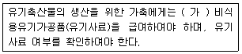
- 100퍼센트
- 89퍼센트 이상
- 70퍼센트 이상
- 60퍼센트 이상
(정답률: 82%)
43. 아연 중금속에 대한 내성정도가 가장 작은 것은?
- 파
- 당근
- 셀러리
- 시금치
(정답률: 61%)
44. 폭이 좁고 처마가 높은 양지붕형 온실을 연결한 것으로 연동형 온실의 결점을 보완한 온실은?
- 외지분형 온실
- 스리쿼터형 온실
- 둥근지불형 온실
- 벤로형 온실
(정답률: 66%)
45. 육종의 과정으로 옳은 것은?
- 육종목표 설정 → 변이작성 → 우량계통 육성 → 생산성 검정 → 지역적응성 검정 → 종자증식 → 신품종 보급
- 육종목표설정 → 변이작성 → 우량계통 육성 → 지역적 응성 검정 → 생산성 검정 → 종자증식 → 신품종보급
- 육종목표설정 → 우량계통 육성 → 변이작성 → 지역적응성 검정 → 생산성 검정 → 종자증식신품종 보급
- 육종목표 설정 → 지역적응성 검정 → 우량계통 육성 → 변이작성 → 생선성 검정 → 종자증식 → 신품종 보급
(정답률: 62%)
46. 다음에서 설명하는 것은?
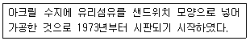
- FRP판
- FRA판
- MMA판
- PC판
(정답률: 51%)
47. 작물의 재배에 적합한 토성에서 재배적지가 사토~식양토에 해당하는 것은?
- 수수
- 감자
- 옥수수
- 담배
(정답률: 59%)
48. 식품첨가물 또는 가공보조제로 사용이 가능한 물질에서 식품첨가물로 사용 시 허용범위가 소시지, 난백의 저온살균, 유제품, 과립음료에 해당하는 것은?
- 구연산삼나트륨
- 무수아황산
- 산탄검
- 염화마그네슘
(정답률: 64%)
49. 병해충 관리를 위하여 사용이 가능한 물질에서 사용가능 조건으로 “과수의 병해관리용으로만 사용할 것”에 해당하는 것은?
- 젤라틴
- 과망간산칼륨
- 해수
- 천일염
(정답률: 66%)
50. 기둥과 기둥 사이에 배치하여 벽을 지지해 주는 수직재는?
- 갖도리
- 서까래
- 샛기둥
- 보
(정답률: 67%)
51. 다음에서 설명하는 것은?
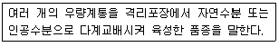
- 단순순환선발 품종
- 합성 품종
- 상호순환선발 품종
- 영양번식 품종
(정답률: 57%)
52. 수경재배의 분류에서 고형배지경이면서 유기배지경에 해당하는 것은?
- 암면경
- 펄라이트경
- 코코넛 코이어경
- 사경
(정답률: 71%)
53. 내습성이 가장 강한 작물은?
- 당근
- 미나리
- 고구마
- 감자
(정답률: 72%)
54. 지력을 토대로 자연의 물질순환 원리에 따르는 농업은?
- 정밀농업
- 자연농업
- 생태농업
- 저투입 지속적 농업
(정답률: 74%)
55. 유기농산물 및 유기임산물의 토양개량과 작물생육을 위하여 사용이 가능한 물질 중 사용가능 조건이 “저온발효 : 6개월 이상 발효된 것일 것”에 해당하는 것은?
- 톱밥
- 나뭇재
- 산야초
- 사람의 배설물
(정답률: 78%)
56. 유기축산물 축사 및 방목에 대한 세부요건 중 축사 조건으로 틀린 것은?
- 음수는 접근이 용이할 것
- 공기순환, 온도ㆍ습도, 먼지 및 가스농도가 가축건강에 유해하지 아니한 수준 이내로 유지되어야 하고, 건축물은 적절한 단열ㆍ환기시설을 갖출 것
- 충분한 자연환기와 햇빛이 제공될 수 있을 것
- 사료관리를 위한 사료의 접근 거리를 멀리 둘 것
(정답률: 82%)
57. F2~F4세대에는 매세대 모든 개체로부터 1립씩 채종하여 집단재배를 하고, F4 각 개체별로 F5계통재배를 하는 것은?
- 여교배육종
- 1개체 1계통 육종
- 계통육종
- 집단육종
(정답률: 75%)
58. 다음 중 광합성자급영양생물에 해당하는 것은?
- 질화세균
- cyanobacteria
- 황산화세균
- 수소산화세균
(정답률: 55%)
59. 일반농가가 유기축산으로 전환하거나 유기가축이 아닌 가축을 유기농장으로 입식하여 유기축산물을 생산ㆍ판매하려는 경우에 젖소 시유 생산물을 위한 최소 사육기간은?
- 착유우는 30일, 새끼를 낳지 않은 암소는 3개월
- 착유우는 60일, 새끼를 낳지 않은 암소는 6개월
- 착유우는 90일, 새끼를 낳지 않은 암소는 6개월
- 착유우는 120일, 새끼를 낳지 않은 암소는 9개월
(정답률: 68%)
60. 유기축산물 사육장 및 사육조건에 대한 내용이다. ()에 알맞은 내용은?
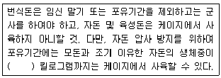
- 25
- 35
- 45
- 55
(정답률: 77%)
4과목: 유기식품 가공.유통론
61. 시장의 수요와 공급이 포화 상태가 되고 판매량이 최대 수준이 되며, 시장점유율을 유지하고자 다양한 홍보 활동을 하는 상품수명주기는?
- 도입기
- 성장기
- 성숙기
- 쇠퇴기
(정답률: 74%)
62. HACCP의 7원칙이 아닌 것은?
- 위해요소분석
- CCP모니터링 체계 확립
- 개선조치방법 수립
- HACCP팀 구성
(정답률: 59%)
63. 식품의 동결건조의 기본 원리는?
- 승화
- 기화
- 액화
- 응고
(정답률: 67%)
64. 샐러드 원료용으로서 호흡작용이 왕성한 농산물을 슬라이스형태로 절단하여 MA 포장할 때 다음 중 가장 적합한 초장재질은?
- 폴리에틸렌(PE)
- 폴리아미드(PA)
- 폴리에스터(PET)
- 폴리염화비닐리덴(PVDC)
(정답률: 72%)
65. 현미란 벼의 도정 시 무엇을 제거한 것인가?
- 왕겨
- 배아
- 과피
- 종피
(정답률: 73%)
66. 농산물가격의 특징으로 옳지 않은 것은?
- 안정성
- 계정성
- 지역성
- 비탄력성
(정답률: 69%)
67. HACCP에서 정의하는 중요관리점(CCP)이란?
- 식품의 원료관리, 제조ㆍ가공ㆍ조리 및 유통의 모든 과정에서 위해한 물질이 식품에 혼입되거나 식품이 오염되는 것을 사전에 방지하기 위하여 각 과정을 중점적으로 관리하는 기준
- 한계기준을 적절히 관리하고 있는지 여부를 평가하기 위하여 수행하는 일련의 계획된 관찰이나 측정 등의 행위
- 식품의 위해요소를 예방ㆍ제거하거나 허용 수준 이하로 감소시켜 해당 식품의 안전성을 확보할 수 있는 중요한 단계 또는 공정
- 위해요소 관리가 허용범위 이내로 충분히 이루어지고 있는지 여부를 판단할 수 있는 기준이나 기준치
(정답률: 42%)
68. 유기농 토마토 2kg 한 상자의 농가수취가격이 8400원, 유통마진율이 25%일 때 소비자가격은 얼미안가?
- 1⑤00원
- 11200원
- 12200원
- 12500원
(정답률: 51%)
69. 기구나 용기ㆍ포장을 사용하지 않더라도 낱개로 채취할 수 있는 식품 등을 무엇이라 하는가?
- 소립식품
- 단위식품
- 묶음식품
- 포장식품
(정답률: 69%)
70. 농식품 국가인증제도와 소관 부처의 연결이 틀린 것은?
- 유기농산물 인증제-농림축산식품부
- 유기가공식품 인증제-식품의약품안전처
- 유기축산물 인증제-농림축산식품부
- 식품 HACCP 인증제-식품의약품안전처
(정답률: 66%)
71. 소비자가 건강, 환경문제 등을 고려하여 유기식품을 구매한다면, 이는 어떤 유형의 마케팅에 해당하는가?
- 생산지향적 마케팅
- 판매지향적 마케팅
- 시장지향적 마케팅
- 사회복지지향적 마케팅
(정답률: 76%)
72. 우유의 저온살균 방법(온도와 시간)은?
- 63℃, 15분
- 63℃, 30분
- 121℃, 15초
- 121℃, 30초
(정답률: 69%)
73. 다음 중 두부의 응고제로 사용할 수 없는 것은?
- 염화마그네슘
- 포도당
- 염화칼슘
- 황산칼슘
(정답률: 72%)
74. 최적성장온도가 2~40℃이며, 병원성 세균이 많이 존재하는 온도대에 속하는 미생물은?
- 고온균
- 중온균
- 저온균
- 초저온균
(정답률: 59%)
75. 인증농산물의 정보를 검색할 때 아래 인증 번호에서 시군코드에 해당하는 것은? (단, 국립농산물품질관리원 인증 기준에 의한다.)
(정답률: 67%)
76. 햄, 베이컨, 소시지 제조 시 훈연에 의해 저장성이 좋아지는 원인은?
- 혈액응고, 수분감소
- 수분감소, 첨가보존제 활성화
- 첨가보존제 활성화, 가열
- 가열, 연기성분
(정답률: 60%)
77. 장염 비브리오균에 대한 설명으로 틀린 것은?
- 호염성의 감염형 식중독균이다.
- 열저항성이 매우 크다.
- 그램 음석의 무포자 간균이다.
- 편모를 가진다.
(정답률: 64%)
78. 포도주 제조과정에서 아황산염을 첨가하는 이유는?
- 유해균 증식 억제, 포도색소 산화 방지
- 곰팡이 증식 촉진, 포도색소 산화방지
- 효모증식 억제, 포도색소 산화 촉진
- 세균증식 억제, 포도색소 산화 촉진
(정답률: 64%)
79. 니신(nisin)에 대한 설명으로 옳은 것은?
- 세균이 생산한 항 미생물 물질로서 그람 양성세균에 항균력이 있다.
- 곰팡이가 생산한 항 미생물 물질로서 그람 음성세균에 항균력이 있다.
- 효모가 생산한 항 미생물 물질로서 그람 음성세균에 항균력이 있다.
- 식물이 생산한 항 미생물 물질로서 그람 양성세균에 항균력이 있다.
(정답률: 42%)
80. 유연포장재료에 식품을 넣어 통조림처럼 살균하는 포장으로 약 135℃ 정도의 고온에서 가열하여도 견뎌내는 포장방법은?
- 진공포장
- 가스치환포장
- 저온살균포장
- 레토르트파우치포장
(정답률: 80%)
5과목: 유기농업관련 규정
81. 유기가공식품 생산물의 품질관리 등에서 유기합성농약은 검출되지 아니하여야 하지만 비유기원료의 오염 등 불가항력적인 요인인 것으로 입증되는 경우에 한하여 몇 ppm 이하까지 허용할 수 있는가?
- 0.01 ppm
- 0.⑤ ppm
- 0.1 ppm
- 0.5 ppm
(정답률: 76%)
82. 친환경관련법상 인증심사의 절차 및 방법의 세부사항에 대한 내용이다. ( A )에 알맞은 내용은?
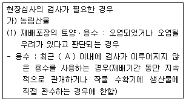
- 1년
- 3년
- 5년
- 7년
(정답률: 40%)
83. 유기농업자재 관련 행정처분기준에서 시험연구기관에 대한 내용 중 고의 또는 중대한 과실로 원제의 이화학적 분석 및 독성 시험성적을 적은 서류를 사실과 다르게 발급한 경우 1회 위반 시 행정처분기준은?
- 업무정지 12개월
- 업무정지 6개월
- 업무정지 3개월
- 지정취소
(정답률: 30%)
84. 유기양봉제품 동물 복지 및 질병관리에 대한 내용이다. ()에 알맞은 내용은?
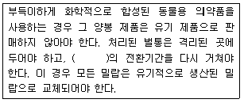
- 3년
- 2년
- 1년
- 6개월
(정답률: 58%)
85. 친환경관련법상 인증심사에 대한 내용이다. ()에 알맞은 내용은?
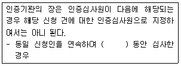
- 1년
- 2년
- 3년
- 4년
(정답률: 50%)
86. 친환경관련법상 인증기관에 대한 행정처분기준에 대한 내용이다. ()에 알맞은 내용은?
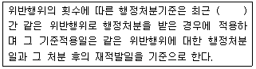
- 6개월
- 1년
- 2년
- 3년
(정답률: 39%)
87. 유기식품등의 유기표시 기준에서 유기표시 도형의 작도법 도형 표시방법 중 표시 도형의 가로의 길이(사각형의 왼쪽 끝과 오른쪽 끝의 폭 : W)를 기준으로 세로의 길이는 몇 의 비율로 하는가?
- 0.75×W
- 0.80×W
- 0.85×W
- 0.95×W
(정답률: 68%)
88. 인증취소 등 행정처분의 기준 및 절차에서 무농약농산물의 위반사항으로 전업, 폐업 등의 사유로 인증품을 생산하기 어렵다고 인정하는 경우에 1차 행정처분기준은?
- 시정명령
- 해당 인증품의 인증표시 변경
- 인증취소
- 해당 인증품의 회수ㆍ폐기
(정답률: 64%)
89. 무농약농산물등의 표시 기준에서 작도법에 대한 내용이다. ( )에 알맞은 내용으로 틀린 것은?
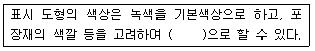
- 파란색
- 빨간색
- 노란색
- 검은색
(정답률: 57%)
90. 친환경관련법상 인증심사의 절차 및 방법의 세부사항에서 심사결과의 판정에 대한 내용이다. ( 가 )에 알맞은 내용은?
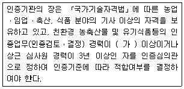
- 3년
- 5년
- 7년
- 10년
(정답률: 56%)
91. 다음은 유기농업자재의 공시 기준에서 식물에 대한 시험성적서 심사사항 중 유식물 등에 대한 약해(藥害)ㆍ비해(肥害)시험의 검토기준에 해당하는 내용이다. (가),(나)에 알맞은 내용은?
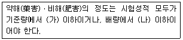
- 가 : 0, 나 : 1
- 가 : 1, 나 : 2
- 가 : 2, 나 : 3
- 가 : 3, 나 : 2
(정답률: 57%)
92. 무농약농산물 경영관리 및 단체관리에서 생산자단체로 인증 받으려는 경우 중 인증신청서를 제출하기 이전에 “소속 농가에게 인증기준에 적합하게 작성된 생산지침서를 제공하여야 한다.”의 요건을 이행하고 관련 증명자료를 보관하여야 한다. “소속 농가에게 인증기준에 적합하게 작성된 생산지침서를 제공하여야 한다.”의 업무를 수행하기 위해 국립농산물품질관리원장이 정하는 자격을 갖춘 생산관리자를 최소 몇 명 이상 지정하여야 하는가?
- 4명
- 3명
- 2명
- 1명
(정답률: 45%)
93. 유기식품등의 유기표시 기준에서 비식용 유기가공품의 표시문자로 틀린 것은?
- 유기사료
- 유기식품사료
- 유기농 사료
- 유기〇〇(〇〇은 사료의 일반적 명칭)
(정답률: 67%)
94. 유기농업자재 표시기준의 작도법에서 공시기관명의 글자색은?
- 흰색
- 파란색
- 검정색
- 청록색
(정답률: 48%)
95. 수입 비식용유기가공품(유기사료)의 적합성조사 방법에서 적합성조사의 종류 및 방법 중 서류검사 시 거래인증서 확인의 검사내용으로 틀린 것은?
- 거래인증서에 기재된 ‘거래시간’의 정보가 신고서 및 인증서의 기재사항과 일치하는지 여부
- 거래인증서에 기재된 ‘거래업자’의 정보가 신고서 및 인증서의 기재사항과 일치하는지 여부
- 거래인증서에 기재된 ‘거래품목’의 정보가 신고서 및 인증서의 기재사항과 일치하는지 여부
- 거래인증서에 기재된 ‘거래량’의 정보가 신고서 및 인증서의 기재사항과 일치하는지 여부
(정답률: 71%)
96. 유기양봉제품의 일반원칙 및 사육조건에 대한 내용이다. (가)에 알맞은 내용은?
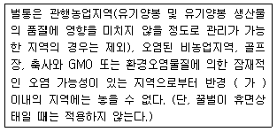
- 3km
- 4km
- 5km
- 6km
(정답률: 54%)
97. 친환경관련법상 인증심사원의 자격 취소 및 정지 기준에서 위반행위로 인증심사 업무와 관련하여 다른 사람에게 자기의 성명을 사용하게 하거나 인증심사원증을 빌려 준 경우에 1회 위반 시 행정처분 기준은?
- 자격정지 3개월
- 자격정지 6개월
- 자격정지 12개월
- 자격취소
(정답률: 35%)
98. 유기농축산물의 함량에 따른 표시기준에서 특정 원재료로 유기농축산물을 사용한 제품에 대한 내용으로 틀린 것은?
- 특정 원재료로 유기농축산물만을 사용한 제품이어야 한다.
- 표시장소는 원재료명 및 함량 표시란에만 표시할 수 있다.
- 원재료면 및 함량 표시란에 유기농축산물의 총함량 또는 원료별 함량을 백분율(%)로 표시하여야 한다.
- 해당 원재료명의 일부로 “유기”라는 용어를 표시할 수 없다.
(정답률: 71%)
99. 유기농산물 재배포장의 전환기간에 대한 내용이다. ( 가 )에 알맞은 내용은?
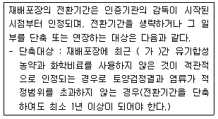
- 2년
- 3년
- 4년
- 5년
(정답률: 56%)
100. 유기농산물의 재배포장, 용수, 종자에 대한 내용이다. ()에 알맞은 내용은?
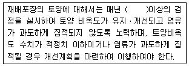
- 4회
- 3회
- 2회
- 1회
(정답률: 59%)